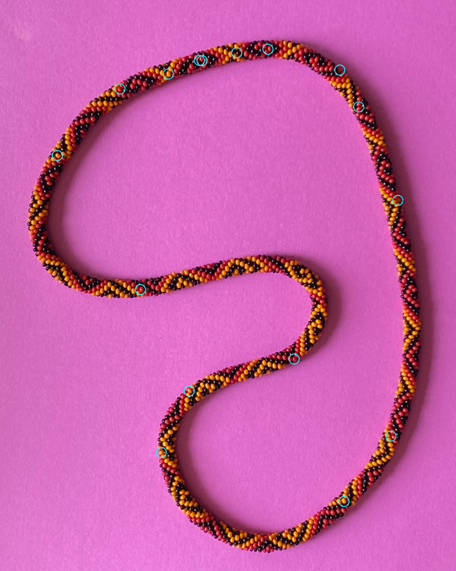

Saved evidence and uncertainty
Complete selected-bead record
Associated reflections and alternative owners
What the categories mean
Unmatched observed reflection: photographic candidate with no selected global pair. Unassigned predicted reflection: modeled lobe with no cataloged candidate; the photographic catalog is incomplete. No predicted reflection: visible bead without a lobe above the retained threshold. Occluded bead: no native visible surface. Ambiguous correspondence: plausible competing owners or sensitivity to matching parameters. Physical failure: demonstrated penetration or uncertified contact, separate from optics.
No old index anchors are imposed. Global one-to-one spatial assignments use 12², 24² (selected), and 48² px² unmatched-observation costs. Strong reflections are paired first; uncertain candidates remain separate. The catalog is incomplete. Alternative assignments and fixed-owner controls are saved. Click a nonzero category count to visit its examples.
Automatically selected residual problems · raw beside annotated

Interpretation and limits
Fitting is complete. No color-pattern inference or Phase 3. Every body, unmatched observation and ambiguous assignment remains in the saved model.